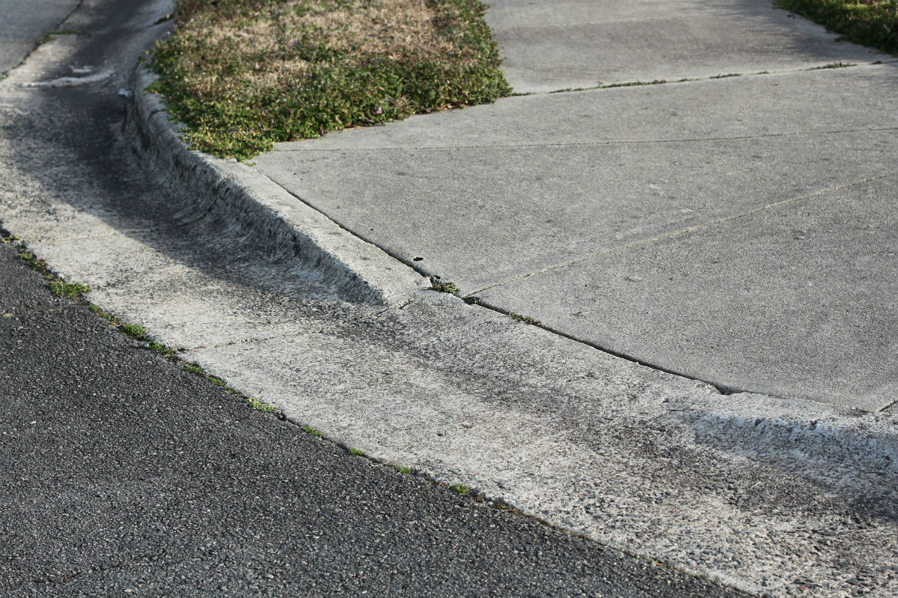
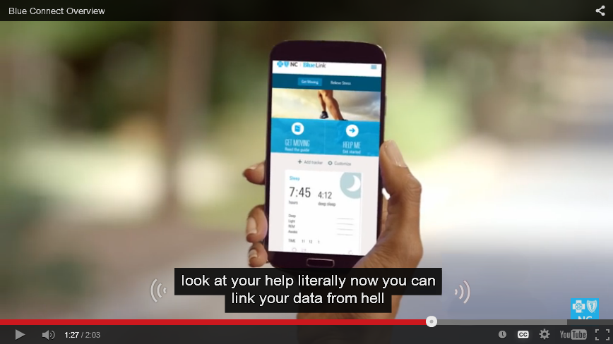
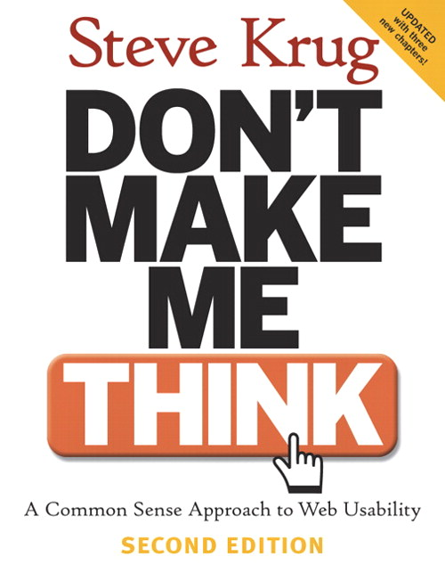

Web Accessibility Workshop
Welcome!
Girl Develop It is here to provide affordable, accessible, and empowering resources for adult women to learn programming and web concepts.
Some "rules":
- We are here for you!
- Every question is important
- Help each other
- Have fun
Introductions
- Tell us about yourself. What do you do?
- What's your coding experience?
- What do you hope to get out of the class today?
Overview for Today
- Types of Disabilities
- Ways to implement accessibility for those disabilities
- Screenreader Demo & Activity
- Ways to implement accessibility for visually impaired users:
- Alt Text for Images
- Link Text
- HTML and Heading structure (Semantics)
- Color Contrast
- Visually Hidden Elements just for Screenreader Users
- ARIA
Who can use your sites?

Photo credit: DeafTech News opens in a new window
What is accessibility?
- Accessibility is about making your sites useful to as many people as possible.
- Accessibility is about overcoming barriers.
- Accessibility is about helping your users.
Why make your sites accessible?
- Expand your potential audience! 56.7 million people in the US have a disability, 1.8 million are unable to see printed words, and 16.1 million have a cognitive or mental illness that impedes daily functioning (source opens in a new window).
- Be in compliance with legal guidelines, like and WCAG 2.0.
- Avoid potential lawsuits opens in a new window.
- Do the right thing.
Accessibility is for everyone!
Photo credit: Sylvia Pellicore cc opens in a new window
Benefits of Accessibility
- Curb cuts were designed for wheelchairs, but others use them. Similarly, accessibility features end up helping everyone.
- Many times, good design and user experience practices create accessibility as a side effect.
- Accessibility features, like good alt text, can improve your search engine placement.
Useful stats from the 2010 U.S. Census Bureau:
- Auditory
- Physical
- Speech
- Cognitive
- Visual
56.7 million people have a disability--19 percent of the civilian noninstitutionalized population.
Provide good captions

Credit: Randall Munroe opens in a new window cc opens in a new window
No, automatic captions don't count
Credit: Sylvia Pellicore, from YouTube
Hearing Disabilities
- Most deaf or hard-of-hearing people have limited difficulty with web accessibility.
- Provide captions or transcripts for multimedia elements.
- Don't rely on sounds to convey information, like an "alert" noise. Even hearing users often have their computers muted.
- Be especially careful if your site targets older users, as hearing loss is common.
Physical Disabilities
- Many users with limited mobility interact with the screen via keyboard.
- Other users use a mouse, but have trouble with fine motor control.
- Make clickable elements large, and put space between them.
- Avoid clickable page elements that move.
- Animations with rapid flickers are not only annoying, they can trigger epileptic seizures.
- These guidelines also help children and touchscreen users!
Don't overwhelm

Photo credit: Thomas Hawk opens in a new window cc opens in a new window
Provide plenty of time
Photo credit: Bethan opens in a new window cc opens in a new window
Dealing with cognitive disabilities
- This is a less-researched area of web accessibility. Here is a Cognitive 101.
- Minimize cognitive load--don't overwhelm the user.
- Use common icons to mark important tasks and consider text labels.
- If you have timed content (forms, image galleries, etc.) provide controls or allow users to extend time.
- CAPTCHAs aren't blind-friendly, are very difficult for users with learning disabilities like dyslexia, and annoy everyone. Consider an alternative method opens in a new window.
Visual disabilities

Photo credit: Braille Institute opens in a new window cc opens in a new window
What assitive technology do people with visual impairment use?
- Browser zoom
- Screen magnification
- High contrast displays
- Screen readers
Demo
Let's try it
- Chrome Vox
- VoiceOver / Talkback
Screen Reader Activity: Discussion
- How did that feel?
- What did you expect from the experience?
- How did using a screen reader meet your expectations?
- What was surprising about it?
So what are some things we can do to help visually impaired users experience of the web?
(Which will also benefit many other users with disabilities).
- Alt Text for Images
- Link Text
- HTML and Heading structure (Semantics)
- Color Contrast
- Visually Hidden Elements just for Screenreader Users
- ARIA
Alt text
- Alternate text describes pictorial content in words.
- Pay attention to context.
- Should never user "image of" to describe
- If an image is purely decorative, use
alt=""to instruct a screen reader to skip it. - Consider using HTML5
figureandfigcaption.
<img src="location.jpg" alt="brief description">
<figure>
<img src="location.jpg">
<figcaption>brief description</figcaption>
</figure>
Logos
What should the alt text be?
Decorative Images

What should the alt text be?
Images related to the content on the page

What should the alt text be?
Link Text
Just like alt text, give context!

External Links
Let's Look at Some Code
<a href="goofy.html">Goofy page</a>
<a href="http://disney.com" target="_blank" class="external-link">
Disney.com
<span class="offscreen">
opens in a new window
<span/>
</a>
For links that open in new windows, an offscreen span inside the link is most reliable for screen readers.
Semantic HTML Structure
Deals with the structure of the page, or the DOM
HTML Headings
Semantic structure is one of the most important usability features for screen reader users, Headings and their structure also help navigate the page.
// Headings should not skip levels until h1-h4 have been established
<h1>Most important</h1>
<h2>Next most important</h2>
<h3>Third most important</h3>
<h4>Other heading</h4>
<h5>Other heading</h5>
<h6>Other heading</h6>
Ideal DOM Layout
<html lang="en">
<head></head>
<body>
<header>
<nav></nav>
</header>
<main>
<section></section>
<article></article>
<aside></aside>
<div></div>
</main>
<footer></footer>
</body>
</html>
Provide contrast

Photo credit: antifluor opens in a new window cc opens in a new window
Resources for Color Contrast
More tips for using color
- If you use color to indicate something, also use another indicator. For example, underline links on hover or mark a required field with an asterisk.
- Red/green color blindness is the most common, so avoid green on red.
- Include color names in product descriptions and show examples (article opens in a new window)
- Have a minimum of contrast ratio of 4.5:1 for normal text and 3:1 for large text. (Checker opens in a new window)
- Try zooming in on your designs, to see how they look when enlarged. It is a good idea to use ems and percentages instead of pixels when you can.
Visually Hidden Content
How does it work?
/* Hide only visually, but have it available for screenreaders.*/
.visually-hidden {
position: absolute !important;
clip: rect(1px 1px 1px 1px); /* IE6, IE7 */
clip: rect(1px, 1px, 1px, 1px);
padding: 0 !important;
border: 0 !important;
height: 1px !important;
width: 1px !important;
overflow: hidden;
}
How do I code for accessibility?
Accessible Rich
Internet Applications
- Expands HTML's native vocabulary.
- Communicates state and purpose to assistive technologies.
- Used mainly for custom widgets and web applications.
What is WAI-ARIA, what does it do for me, and what not? opens in a new window
ARIA Core Components
ARIA Landmark Roles
What does this thing do?
<form role="search"><nav role="navigation">ARIA Properties
The nature of the thing, describe relationships with other elements
<input aria-required="true"><input aria-label="Mobile Navigation">ARIA States
The current state of this particular thing - typically updated with JavaScript
<input aria-disabled="true"><input aria-expanded="false"><input aria-hidden="true">Benefits of Accessibility
- Curb cuts were designed for wheelchairs, but others use them. Similarly, accessibility features end up helping everyone.
- Many times, good design and user experience practices create accessibility as a side effect.
- Accessibility features, like good alt text, can improve your search engine placement.
Accessibility is a continuum, not a checkbox

Photo credit: Matt Carman opens in a new window cc opens in a new window
Primary Resources & Articles
General Resources & Articles
General Resources & Articles
General Resources & Articles
Testing Tools
Browser Extension Tools
- tota11y: an accessibility visualization toolkit
- pa11y: your automated accessibility testing pal
- Highlight accessibility features of web pages
- Wave Accessibility Chrome Extension
- Accessibility Bookmarks: Highlight accessibility features of web pages
- Chrome Vox Screenreader Extension
- Accessibility Developer Tools
Testing Tools
Color Contrast Tools
Sites Approved by Accessible Users
Contact Information!
Please feel free to contact me with any other questions!
lindsaysilver1@gmail.com